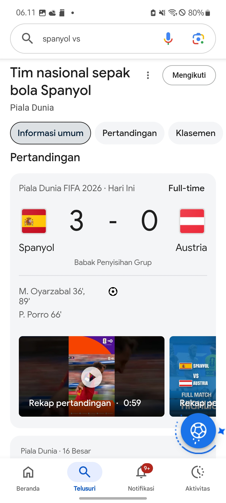

1. Empat Gaya Utama Penerbangan
Agar sebuah pesawat terbang dapat mengangkasa dengan stabil, kendaraan tersebut harus memanipulasi empat gaya fisika utama secara seimbang melalui hukum mekanika fluida dan prinsip Bernoulli.
 Gambar 1: Visualisasi Interaksi Gaya Angkat, Hambatan, Berat, dan Dorong.
Gambar 1: Visualisasi Interaksi Gaya Angkat, Hambatan, Berat, dan Dorong.
- Gaya Angkat (Lift): Dihasilkan oleh perbedaan tekanan udara di atas dan di bawah sayap (Prinsip Bernoulli).
- Gaya Dorong (Thrust): Dihasikan oleh sistem penggerak seperti mesin jet atau baling-baling.
- Gaya Berat (Weight): Gaya gravitasi yang menarik massa pesawat ke pusat bumi.
- Gaya Hambat (Drag): Hambatan udara yang melawan pergerakan maju pesawat.
2. Komponen Struktural Utama
Struktur fisik pesawat dirancang khusus menggunakan material berkekuatan tinggi namun ringan (seperti komposit karbon dan aluminium tingkat tinggi) untuk menahan deformasi struktural selama fase penerbangan ekstrem.

Gambar 2: Komponen Utama Bagian Fuselage, Wing, dan Empennage.Komponen utama tersebut meliputi Fuselage (badan pesawat) sebagai kompartemen kru dan kargo, Wings (sayap) sebagai penghasil gaya angkat utama, serta Empennage (ekor pesawat) yang berfungsi menjaga stabilitas direksional (*pitch* dan *yaw*).